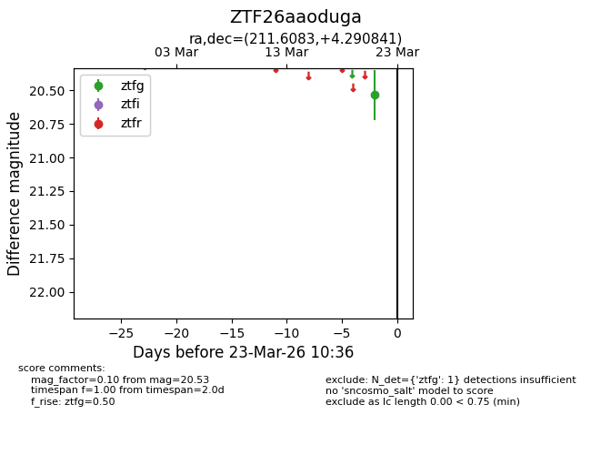
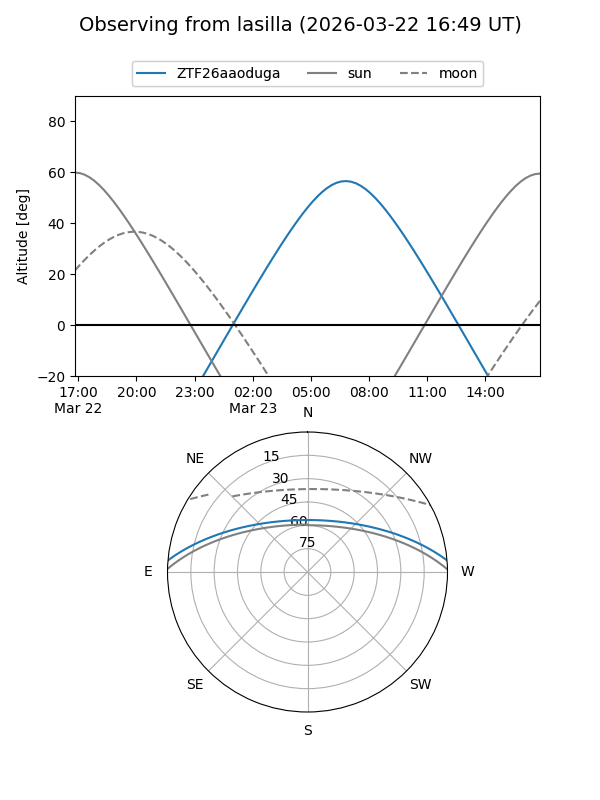
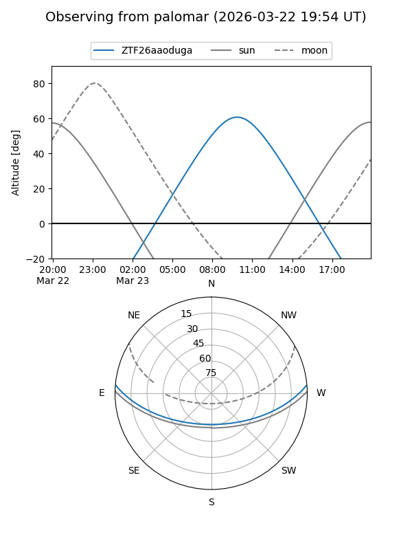

ZTF26aaoduga
Target ZTF26aaoduga at 2026-03-23 10:38
Aliases and brokers:
FINK: link
Lasair: link
ALeRCE: link
alt names
ZTF26aaoduga (ztf,fink_ztf)
Coordinates:
equatorial (ra, dec) = 211.6083,+4.29084
equatorial (HMS+DMS) = 14:06:26.00,+04:17:27.03
galactic (l, b) = (344.2983,+60.98779)
Flags:
Photometry:
last ztfg=20.53
1 ztfg detections
Lightcurve

Visibility


Additional plots